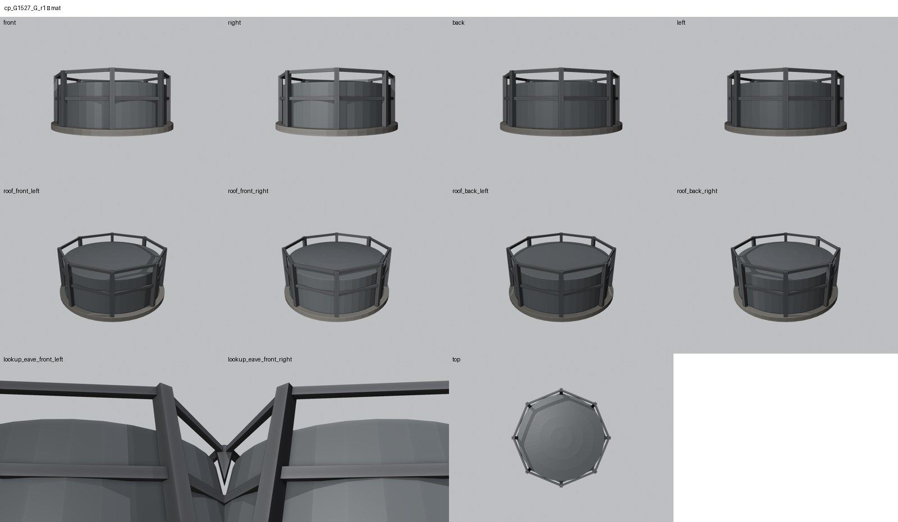
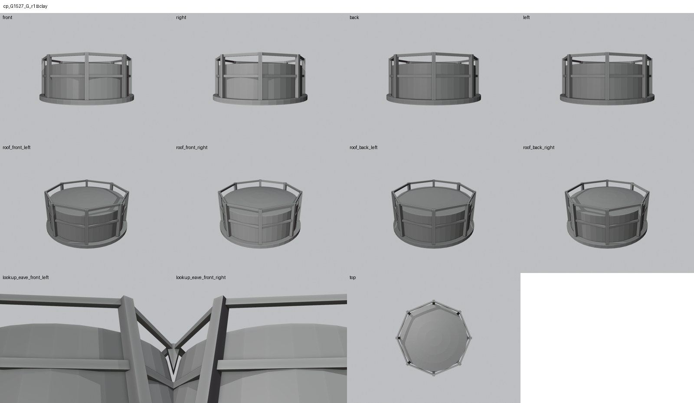
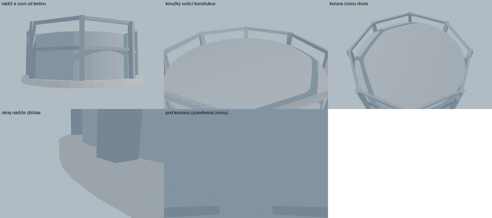

Identita domu
Upozornění – hypotéza – stav kolem 1938: Plynojem bývalé plynárny podle GIS plánu 1938 a stavebního plánu. Podle karty KSPPOP byla plynárna za války zříceninou a potom zbořena – v 60. letech tu plynojem pravděpodobně už nestál. Poloha zvonu, výška a vodicí konstrukce jsou odhad.
Areál bývalé plynárny (Gasanstalt / städtisches Gaswerk, Gasgasse). Budova nemá číslo popisné, je jen v GIS plánu 1938. Podle karty KSPPOP u snímku cp_523_003 byla plynárna za války zříceninou a potom zbořena, fotografie 60.–70. let ukazují volný dvůr – jde tedy o stav kolem roku 1938, ne o 60. léta. Kruh GIS 1527 (průměr 16,0 m) je starší plynojem 800 m³, který plán z roku 1903 uvádí jako stávající, blíž k ulici.
Použité prameny: plán nádrže „Gaasometer Bassein“ (komise 14. 6. 1872, příloha cp_523_006): průměr 46 vídeňských stop = 14,54 m, hloubka 4,95 m; situační plán plynárny 1872 (cp_523_007); situace 1903 (cp_523_005); GIS půdorys 1527.
Přílohy v databázi (0)
V databázi Libuše tento dům nemá žádné přílohy.
Geometrie
| Revize geometrie | r1 |
|---|---|
| Úsek ulice | S3 · bývalá plynárna |
| Poloha | GIS budova 1527, bez čísla popisného, ulice U hřiště (1938 Seligerova) |
| Šířka průčelí | 15,98 m |
| Výška okapu | 6,80 m (odhad) |
| Podlaží | – |
| Střecha podle pramenů | kopulovitá koruna zvonu (odhad 0,6 m) |
| Otvory / vikýře v modelu | 0 / 0 |
| Polygonů | 769 |
Kontrolní pohledy






Kontrola modelu
| Brána geometrie (automaticky) | v pořádku |
|---|---|
| Uzavřené podkroví (GLB) | v pořádku: zásahy paprsků 0, nekryté zdivo 0,00 m², střecha nad prázdnem 0,00 m² |
| UV mapování | v pořádku: 0 zkolabovaných ploch z 769 |
| Síť | v pořádku |
| Počty otvorů proti pramenu | souhlasí |
| Vizuální kontrola | prošla (Claude (Opus 5.5), 2026-10-26) |
| Kontrola střechy | prošla |
- hlavní průčelí: plynojem bez oken a dveří (souhlasí)
Textury
bez textur (částečně hypotéza – jen prosté materiály)
Až Codex dodá texturovaný model, objeví se v prohlížeči nahoře volba Textury (Codex).
Hypotézy
Upozornění – hypotéza – stav kolem 1938: Plynojem bývalé plynárny podle GIS plánu 1938 a stavebního plánu. Podle karty KSPPOP byla plynárna za války zříceninou a potom zbořena – v 60. letech tu plynojem pravděpodobně už nestál. Poloha zvonu, výška a vodicí konstrukce jsou odhad.
Vše níže je model_hypothesis, provisional, locked: false.
- zvon a vodicí konstrukce (8 sloupů do 6,2 m) jsou typová hypotéza – plán zvonu z roku 1872 nebyl nalezen
- v 60. letech plynojem pravděpodobně už nestál
Technický zápis hypotéz v plánu modelu (revize r1, bez diakritiky)
- zvon jednodílný, 800 m³ / (π·7,1²) ≈ 5,0 m – horní okraj 4,8 m nad nádrží
- vodicí konstrukce 8 sloupů do 6,2 m – bez pramene (typová hypotéza)
- stav kolem 1938, v 60. letech zbořeno (karta cp_523_003)
Historie revizí modelu
- r1 26.10.2026: plynojem jako hypotéza (požadavek uživatele 26. 10. 2026)
Soubory
- Geometrie budova GIS 1527 (bez čp.), GLB (revize r1)
- Pracovní model: F:\MOST\output\u_hriste_street_claude_2026-10-25\houses\cpG1527\r1\cp_G1527_G_r1.blend
- Plán modelu: F:\MOST\output\u_hriste_street_claude_2026-10-25\houses\cpG1527\geometry_plan.json